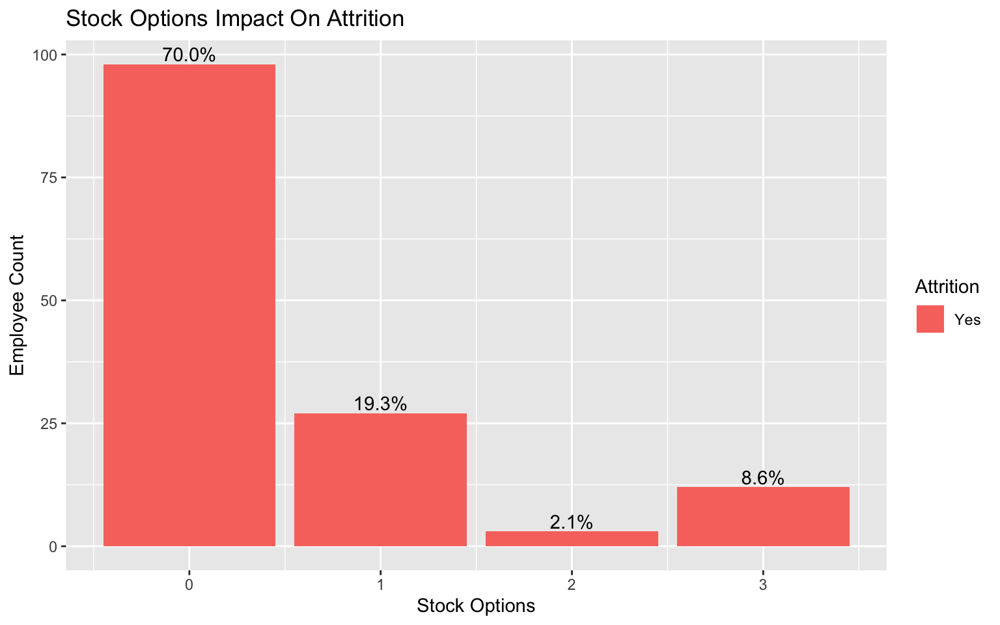
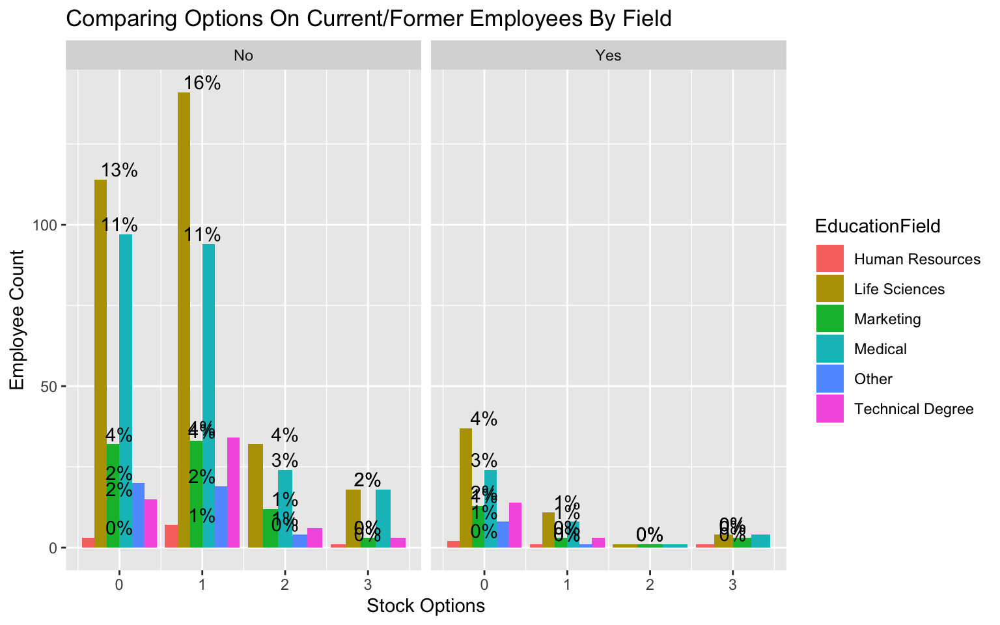
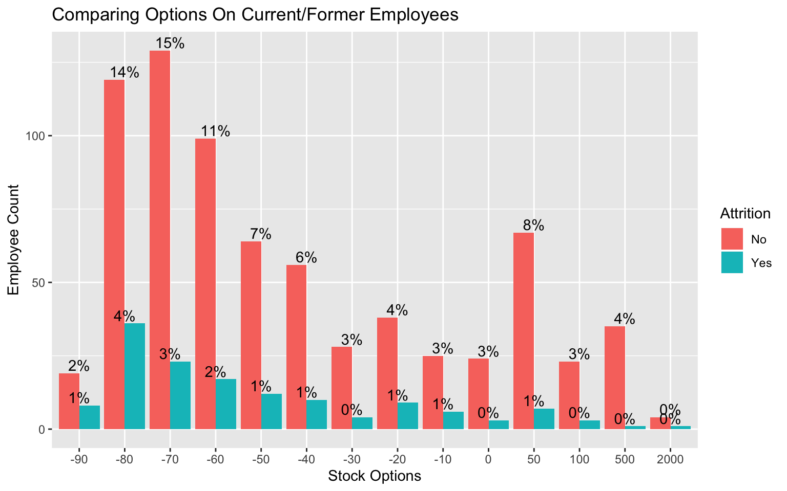

Talent Management Solution Case Study
Sanjay Pillay
11/21/2019
Introduction
The following code consists of the Exploratory Data Analysis conducted by DDSDataAnalytics for the Talent Manangement solution for Frito Lays. The Exploratory Data Analysis takes a look at key Attrition Trends and Factors leading to it. It also evaluates three models for classification of Employee Attrition prediction and uses the best to predict it, it also evaluates a linear regression based model for predicting salary.
Video Presentation
Shinny App
GitHubIo
GitHub repo
https://github.com/sdpillay/dds_casestudy2
Predicted Classification & Income file Location
GitHubRepo../data/Case2PredictionsSanjayPillayAttrition.csv Predicted Attrition GitHubRepo../data/Case2PredictionsSanjayPillaySalary.csv Predicted Salary
Importing Libraries
#uncomment below installpks command if running for the first time
#install.packages("dplyr", "naniar","mice","VIM","stringi","stringr"."rvest","purrr","tidyverse","tidyr","ggthemes","plotly","ggplot2","reshape2","GGally","caret","class","e1071","hexbin","car","scatterplot3d","randomForest","multcomp","broom")
library(dplyr) #join etc
library(plyr)
library(naniar) # check nulls
library(mice) # imputing
library(VIM) # view imputed datas
library(stringi)
library(stringr)
library(rvest) #html_table, html_node
library(purrr)
library(tidyverse) # Data cleaning
library(tidyr) # Data cleaning
library(ggthemes) #Plotting
library(plotly) #Plotting
library(ggplot2) #Plotting
library(reshape2) # melt
library(GGally) # ggpairs
library(caret) #Confution matrix
library(class)
library(caret)
library(e1071)
library(hexbin)
library(car)
library(scatterplot3d)
library(randomForest)
library("multcomp")
library(broom)Set of common model validation methods
#Lets add a binned column for Age, percenatage pay difference betweer employees pay vs the market monthly rate
fixData <- function(data){
#for graphs
data = data %>% mutate(deptx = factor(data$Department, levels = c("Research & Development","Sales","Human Resources")))
data = data %>% mutate(fjl = as.factor(JobLevel),
fyc = as.factor(YearsAtCompany),
fycr = as.factor(YearsInCurrentRole),
ftrg = as.factor(TrainingTimesLastYear),
fylp = as.factor(YearsSinceLastPromotion),
bes = cut(EnvironmentSatisfaction,
breaks=c(1,2,3,4,5), include.lowest=TRUE,
right=FALSE, labels=c( "1","2","3","4")),
byc = cut(YearsAtCompany,
breaks=c(0,3,6,10,15,30,40), include.lowest=TRUE,
right=FALSE, labels=c(
"0-3","3-6","6-10","10-15","15-30","30-40")),
bwy = cut(TotalWorkingYears,
breaks=c(0, 5, 10, 15, 20, 25, 30,40), include.lowest=TRUE,
right=FALSE, labels=c("0~5", "5~10",
"10~15","15~20","20~25","25~30","30~40")),
bdist = cut(DistanceFromHome, breaks=c(0, 5, 10, 15,
20, 25,30), include.lowest=TRUE,
right=FALSE, labels=c("0~5", "5~10",
"10~15","15~20","20~25","25~30"))
,
bedu = cut(Education,
breaks=c(1,2,3,4,5,6), include.lowest=TRUE,
right=FALSE, labels=c( "1",
"2","3","4","5")),
bwy = cut(TotalWorkingYears,
breaks=c(0,5, 10, 15, 20, 25, 30,40), include.lowest=TRUE,
right=FALSE, labels=c("0~5", "5~10",
"10~15","15~20","20~25","25~30","30~40")),
bdist = cut(DistanceFromHome, breaks=c(0, 5, 10, 15,
20, 25,30), include.lowest=TRUE,
right=FALSE, labels=c("0~5", "5~10",
"10~15","15~20","20~25","25~30"))
,
bage = cut(Age, breaks=c(18, 25, 30, 35,
40, 45,50, 60), include.lowest=TRUE,
right=FALSE, labels=c("18~25", "25~30",
"30~35","35~40","40~45","45~50","50~60"))
,ppayd = (((MonthlyIncome - MonthlyRate)/MonthlyRate)*100),
bpayd = cut(ppayd, breaks=c(-100, -90 ,-80, -70, -60, -50, -40, -30,
-20, -10, 0, 50, 100, 500, 2000), include.lowest=TRUE,
right=FALSE, labels=c("-90", "-80", "-70", "-60", "-50",
"-40", "-30",
"-20","-10","0","50","100","500","2000")))
return (data)
}
# Methods to get optimal k, check knn/NB accuracys
## Common Tunig k hyperparam function
# pass cv=1(split validation is default); 2(leave 1 out validation), numk to evaluate(default = 10), iteration to test(default = 20), data split percentage(default .75), data to tune on, explanatory names, dependant variable, plot (TRUE: print plot output)
tuneK <- function(cv=0,numksF =10, numksT =20, iterations=20, splitPerc=.75, tuningData, cExplanotry, dependentVariable, plot = FALSE){
masterAcc = 0
ks = numksT-numksF
PmasterAcc = matrix(nrow = iterations, ncol = ks)
masterk = 0
#splitPerc = .8
result = 0
oldA = .0
for(j in 1:iterations)
{
trainInd = sample(1:dim(tuningData)[1],round(splitPerc * dim(tuningData)[1]))
train = tuningData[trainInd,]
test = tuningData[-trainInd,]
#eval(substitute(dependentVariable), train)
for(i in 1:ks)
{
if (cv==1){
classifications = knn.cv(tuningData[,cExplanotry],
eval(substitute(dependentVariable), tuningData),
prob = TRUE, k=i+numksF)
CM = confusionMatrix(table(classifications, eval(substitute(dependentVariable),
tuningData) ))
}else{
classifications = knn(train[,cExplanotry],test[,cExplanotry],
eval(substitute(dependentVariable), train),
prob = TRUE, k=i+numksF)
CM = confusionMatrix(table(classifications,eval(substitute(dependentVariable), test)))
}
PmasterAcc[j,i] = CM$byClass["Specificity"]
if (CM$byClass["Specificity"] > oldA)
{
masterk = i
masterAcc = CM$byClass["Specificity"] #CM$overall["Accuracy"]
#print(masterk)
# print(masterAcc)
oldA = CM$byClass["Specificity"] #CM$overall["Accuracy"]
}
#CM$overall[1]
}
}
MeanAcc = colMeans(PmasterAcc)
result = which.max(MeanAcc)
# add kfrom offset
result = result + numksF
#print(max(MeanAcc))
if (plot){
plot(seq(1 + numksF,ks + numksF,1),MeanAcc, type = "l",main="Plot of Specificity vs k",
xlab="k value",
ylab="Specificity")
}
print(result)
return(result)
}
#Method to get Random Forest Accuracy, use 20% of model for accuracy calculation
checkRandomForest <- function(modelData,
cformula){
trainInd = sample(1:dim(modelData)[1],round(.8 * dim(modelData)[1]))
testData = modelData[trainInd,]
titanic_rf_v6 <- randomForest(cformula,
data = modelData)
titanic_rf_v6
p = predict(titanic_rf_v6, newdata = testData)
CM = confusionMatrix(table(p ,
testData$Attrition))
print(CM)
return (p)
}
#Method to get Knn Accuracy
checkKnnAccuracy <- function(k, iterations=20, modelData,
cExplanotry, dependentVariable){
accuracydf <- data.frame(accuracy = numeric(iterations),
sensitivity = numeric(iterations), specificity = numeric(iterations))
masterAcc = matrix(nrow = iterations)
for(j in 1:iterations)
{
classifications = knn.cv(modelData[,cExplanotry],
eval(substitute(dependentVariable), modelData),
prob = TRUE, k)
CM = confusionMatrix(table(classifications, eval(substitute(dependentVariable),
modelData) ))
#masterAcc[j] = CM$overall[1]
accuracydf$accuracy[j] = CM$overall[1]
accuracydf$sensitivity[j] = CM$byClass["Sensitivity"]
accuracydf$specificity[j] = CM$byClass["Specificity"]
#print(CM)
}
#accuracydf[accuracydf$accuracy == 0.91,]
summary_acc_df <- accuracydf %>% summarise(mean_accuracy = mean(accuracy),
mean_sensitivity = mean(sensitivity), mean_specificity =
mean(specificity, na.rm = T))
print(summary_acc_df)
}
#Method to get NB Accuracy using loocv , use 20% of model for accuracy calculation
checkNBAccuracy2 <- function( modelData,
formula){
trainInd = sample(1:dim(modelData)[1],round(.8 * dim(modelData)[1]))
testData = modelData[trainInd,]
model <- train(formula, method = "nb", data = modelData, trControl = trainControl(method = "cv"))
p = predict(model, newdata = testData)
CM = confusionMatrix(table(p ,
testData$Attrition))
print(CM)
}
#Method to get NB Accuracy
checkNBAccuracy <- function(iterations=20, splitPerc=.80, modelData,
cExplanotry, dependentVariable){
accuracydf <- data.frame(accuracy = numeric(iterations),
sensitivity = numeric(iterations), specificity = numeric(iterations))
masterAcc = matrix(nrow = iterations)
for(j in 1:iterations)
{
trainInd = sample(1:dim(modelData)[1],round(splitPerc * dim(modelData)[1]))
train = modelData[trainInd,]
test = modelData[-trainInd,]
model = naiveBayes(train[,cExplanotry], eval(substitute(dependentVariable), train), laplace = 3)
#table(predict(model,test[,c(1,2)]),test$Species)
CM = confusionMatrix(table(predict(model, test[,cExplanotry] ),
eval(substitute(dependentVariable), test) ))
accuracydf$accuracy[j] = CM$overall[1]
accuracydf$sensitivity[j] = CM$byClass["Sensitivity"]
accuracydf$specificity[j] = CM$byClass["Specificity"]
}
summary_acc_df <- accuracydf %>% summarise(mean_accuracy = mean(accuracy),
mean_sensitivity = mean(sensitivity), mean_specificity =
mean(specificity, na.rm = T))
print(summary_acc_df)
# print(CM)
}Analysis
#Read supplied data
cdw = getwd()
employeeData1 = read.csv(paste(getwd(),"/data/","CaseStudy2-data.csv", sep = ""),header = TRUE)
testEmpDataSal = read.csv(paste(getwd(),"/data/","CaseStudy2CompSet No Salary.csv", sep = ""),header = TRUE)
testEmpDataAttr = read.csv(paste(getwd(),"/data/","CaseStudy2CompSet No Attrition.csv", sep = ""),header = TRUE)
#Check structure
str(employeeData1)## 'data.frame': 870 obs. of 36 variables:
## $ ID : int 1 2 3 4 5 6 7 8 9 10 ...
## $ Age : int 32 40 35 32 24 27 41 37 34 34 ...
## $ Attrition : Factor w/ 2 levels "No","Yes": 1 1 1 1 1 1 1 1 1 1 ...
## $ BusinessTravel : Factor w/ 3 levels "Non-Travel","Travel_Frequently",..: 3 3 2 3 2 2 3 3 3 2 ...
## $ DailyRate : int 117 1308 200 801 567 294 1283 309 1333 653 ...
## $ Department : Factor w/ 3 levels "Human Resources",..: 3 2 2 3 2 2 2 3 3 2 ...
## $ DistanceFromHome : int 13 14 18 1 2 10 5 10 10 10 ...
## $ Education : int 4 3 2 4 1 2 5 4 4 4 ...
## $ EducationField : Factor w/ 6 levels "Human Resources",..: 2 4 2 3 6 2 4 2 2 6 ...
## $ EmployeeCount : int 1 1 1 1 1 1 1 1 1 1 ...
## $ EmployeeNumber : int 859 1128 1412 2016 1646 733 1448 1105 1055 1597 ...
## $ EnvironmentSatisfaction : int 2 3 3 3 1 4 2 4 3 4 ...
## $ Gender : Factor w/ 2 levels "Female","Male": 2 2 2 1 1 2 2 1 1 2 ...
## $ HourlyRate : int 73 44 60 48 32 32 90 88 87 92 ...
## $ JobInvolvement : int 3 2 3 3 3 3 4 2 3 2 ...
## $ JobLevel : int 2 5 3 3 1 3 1 2 1 2 ...
## $ JobRole : Factor w/ 9 levels "Healthcare Representative",..: 8 6 5 8 7 5 7 8 9 1 ...
## $ JobSatisfaction : int 4 3 4 4 4 1 3 4 3 3 ...
## $ MaritalStatus : Factor w/ 3 levels "Divorced","Married",..: 1 3 3 2 3 1 2 1 2 2 ...
## $ MonthlyIncome : int 4403 19626 9362 10422 3760 8793 2127 6694 2220 5063 ...
## $ MonthlyRate : int 9250 17544 19944 24032 17218 4809 5561 24223 18410 15332 ...
## $ NumCompaniesWorked : int 2 1 2 1 1 1 2 2 1 1 ...
## $ Over18 : Factor w/ 1 level "Y": 1 1 1 1 1 1 1 1 1 1 ...
## $ OverTime : Factor w/ 2 levels "No","Yes": 1 1 1 1 2 1 2 2 2 1 ...
## $ PercentSalaryHike : int 11 14 11 19 13 21 12 14 19 14 ...
## $ PerformanceRating : int 3 3 3 3 3 4 3 3 3 3 ...
## $ RelationshipSatisfaction: int 3 1 3 3 3 3 1 3 4 2 ...
## $ StandardHours : int 80 80 80 80 80 80 80 80 80 80 ...
## $ StockOptionLevel : int 1 0 0 2 0 2 0 3 1 1 ...
## $ TotalWorkingYears : int 8 21 10 14 6 9 7 8 1 8 ...
## $ TrainingTimesLastYear : int 3 2 2 3 2 4 5 5 2 3 ...
## $ WorkLifeBalance : int 2 4 3 3 3 2 2 3 3 2 ...
## $ YearsAtCompany : int 5 20 2 14 6 9 4 1 1 8 ...
## $ YearsInCurrentRole : int 2 7 2 10 3 7 2 0 1 2 ...
## $ YearsSinceLastPromotion : int 0 4 2 5 1 1 0 0 0 7 ...
## $ YearsWithCurrManager : int 3 9 2 7 3 7 3 0 0 7 ...#Check Income distribution
summary(employeeData1$MonthlyIncome)## Min. 1st Qu. Median Mean 3rd Qu. Max.
## 1081 2840 4946 6390 8182 19999#Fix data to add bins etc using common method
employeeData = fixData(employeeData1)
#Export for testing Shinny app
write_csv(employeeData, "ShinnyData.csv",append = FALSE)
#Seperate Attrition vs non attrition
empL = employeeData %>% filter(Attrition == "Yes")
empW = employeeData %>% filter(Attrition == "No")
#Trend Analysis
#Attritions based on Depatment
empL %>% ggplot(aes(x=Department, fill=Attrition)) +
geom_histogram(stat='count') + labs(title="Attrition By Department", y = "Employee Count", x="Department" ) +geom_text(aes(label = scales::percent((..count..)/sum(..count..)) ), stat="count",
vjust = -.25)## Warning: Ignoring unknown parameters: binwidth, bins, pad#Attritions based on Field
empL %>% ggplot(aes(x=EducationField, fill=EducationField)) +
geom_histogram(stat='count') + labs(title="Attrition By Education Field", y = "Employee Count", x="Eduction Field" ) +geom_text(aes(label = scales::percent((..count..)/sum(..count..)) ), stat="count",
vjust = -.25)## Warning: Ignoring unknown parameters: binwidth, bins, pad#Attritions based on Department / Field
empL %>% ggplot(aes(x=EducationField, fill=deptx)) +
geom_histogram(stat='count') + labs(title="Attrition By Department/Education Field", y = "Employee Count", x="Education Field" ) +geom_text(aes(label = scales::percent((..count..)/sum(..count..)) ), stat="count",
vjust = -.25)## Warning: Ignoring unknown parameters: binwidth, bins, pad#Attritions based on Education
empL %>% ggplot(aes(x=bedu, fill=bedu)) +
geom_histogram(stat='count') + labs(title="Attrition By Education Years", y = "Employee Count", x="Eduction Years" , fill="Edu Yrs") +geom_text(aes(label = scales::percent((..count..)/sum(..count..)) ), stat="count", vjust = -.25)## Warning: Ignoring unknown parameters: binwidth, bins, pad#Attritions based on Education / Department
empL = empL %>% mutate(deptx = factor(empL$Department, levels = c("Research & Development","Sales","Human Resources")))
empL %>% ggplot(aes(x=bedu, fill=deptx)) +
geom_histogram(stat='count') + labs(title="Attrition By Education Years/Department", y = "Employee Count", x="Eduction Years" , fill="Department") + geom_text(aes(label = scales::percent((..count..)/sum(..count..)) ), stat="count", vjust = -.25)## Warning: Ignoring unknown parameters: binwidth, bins, pad#Factor 1 Attrition due to Stock Options Overall Graphs
empL %>% ggplot(aes(x=StockOptionLevel, fill=Attrition)) +
geom_histogram(stat='count') + labs(title="Stock Options Impact On Attrition", y = "Employee Count", x="Stock Options" ) + geom_text(aes(label = scales::percent((..count..)/sum(..count..)) ), stat="count", vjust = -.25)## Warning: Ignoring unknown parameters: binwidth, bins, pad
#Compare with existing employees
employeeData %>% ggplot(mapping = aes(x = StockOptionLevel, fill = Attrition)) + geom_bar(position = "dodge")+ labs(title="Comparing Options On Current/Former Employees", y = "Employee Count", x="Stock Options" ) + geom_text(aes(label = scales::percent((..count..)/sum(..count..)) ), stat="count", vjust = -.25)empL = empL %>% mutate(deptx = factor(empL$Department, levels = c("Research & Development","Sales","Human Resources")))
#1 Attrition due to Stock Options Dept Graphs
empL %>% ggplot(aes(x=StockOptionLevel, fill=deptx)) +
geom_histogram(stat='count') + labs(title="Stock Options By Dept", y = "Employee Count", x="Stock Options", fill="Department") +geom_text(aes(label = scales::percent((..count..)/sum(..count..)) ), stat="count", vjust = -.25)## Warning: Ignoring unknown parameters: binwidth, bins, pad
#Compare with existing employees
employeeData %>% ggplot(mapping = aes(x = StockOptionLevel, y=, fill = Department)) + geom_bar(position = "dodge")+ labs(title="Comparing Options On Current/Former Employees By Dept", y = "Employee Count", x="Stock Options" )+geom_text(aes(label = scales::percent((..count..)/sum(..count..)) ), stat="count", vjust = -.25)+
facet_wrap(~Attrition) #1 Attrition due to Stock Options by Field Graphs
empL %>% ggplot(aes(x=StockOptionLevel, fill=EducationField)) +
geom_histogram(stat='count') + labs(title="Stock Options By Education Field", y = "Employee Count", x="Stock Options" )## Warning: Ignoring unknown parameters: binwidth, bins, pad#Compare with existing employees
employeeData %>% ggplot(mapping = aes(x = StockOptionLevel, fill = EducationField)) + geom_bar(position = "dodge")+ labs(title="Comparing Options On Current/Former Employees By Field", y = "Employee Count", x="Stock Options" )+geom_text(aes(label = scales::percent((..count..)/sum(..count..)) ), stat="count", vjust = -.25)+
facet_wrap(~Attrition) 
#Statistical significance Analyze mean difference for stock option for eductioan fields/Dept
#Prepare dataframes
emlLLS = empL %>% filter(EducationField=="Life Sciences")
emlWLS = empW %>% filter(EducationField=="Life Sciences")
emlLR = empL %>% filter(Department=="Research & Development")
emlWR = empW %>% filter(Department=="Research & Development")
#t.test for ovwe all difference in means of stock options offered Current/Former Emp
t.test(empW$StockOptionLevel,empL$StockOptionLevel)##
## Welch Two Sample t-test
##
## data: empW$StockOptionLevel and empL$StockOptionLevel
## t = 4.216, df = 187.92, p-value = 3.86e-05
## alternative hypothesis: true difference in means is not equal to 0
## 95 percent confidence interval:
## 0.1845700 0.5091678
## sample estimates:
## mean of x mean of y
## 0.8397260 0.4928571#t.test for Life Science difference in means of stock options offered Current/Former Emp
t.test(emlWLS$StockOptionLevel,emlLLS$StockOptionLevel)##
## Welch Two Sample t-test
##
## data: emlWLS$StockOptionLevel and emlLLS$StockOptionLevel
## t = 2.9385, df = 69.667, p-value = 0.00447
## alternative hypothesis: true difference in means is not equal to 0
## 95 percent confidence interval:
## 0.1212505 0.6337139
## sample estimates:
## mean of x mean of y
## 0.8491803 0.4716981#t.test for R&D difference in means of stock options offered Current/Former Emp
t.test(emlWR$StockOptionLevel,emlLR$StockOptionLevel)##
## Welch Two Sample t-test
##
## data: emlWR$StockOptionLevel and emlLR$StockOptionLevel
## t = 2.9809, df = 95.051, p-value = 0.00365
## alternative hypothesis: true difference in means is not equal to 0
## 95 percent confidence interval:
## 0.1109415 0.5533706
## sample estimates:
## mean of x mean of y
## 0.8521561 0.5200000#Factor 2 Investigate Income impact on attrition
#Plot income gap for employees left by department
empL %>% filter(ppayd < 100) %>% ggplot(aes(x=ppayd, fill=Department)) +
geom_histogram() + labs(title="Pay Gap Distribution Per Deparment", y = "Employee Count", x="Percent Pay Gap Against Monthly Rate" )## `stat_bin()` using `bins = 30`. Pick better value with `binwidth`.#Compare income gap with existing employees
employeeData %>% filter(ppayd < 100) %>% ggplot(aes(x = bpayd, fill = Department)) + geom_bar(position = "dodge")+ labs(title="Percent Pay Gap Against Monthly Rate By Dept", y = "Employee Count", x="Pay Gap" )+
facet_wrap(~Attrition) #Plot income gap for employees left by Field
empL %>% filter(ppayd < 100) %>% ggplot(aes(x=ppayd, fill=EducationField)) +
geom_histogram() + labs(title="Pay Gap Distribution Per Field", y = "Employee Count", x="Percent Pay Gap Against Monthly Rate" )## `stat_bin()` using `bins = 30`. Pick better value with `binwidth`.#Compare income gap with existing employees
employeeData %>% filter(ppayd < 100) %>% ggplot(aes(x = bpayd, fill = EducationField)) + geom_bar(position = "dodge")+ labs(title="Percent Pay Gap Against Monthly Rate By Field", y = "Employee Count", x="Pay Gap" )+
facet_wrap(~Attrition) #Compare income gap with existing employees
employeeData %>% ggplot(mapping = aes(x = bpayd, fill = Attrition)) + geom_bar(position = "dodge")+ labs(title="Comparing Options On Current/Former Employees", y = "Employee Count", x="Stock Options" ) + geom_text(aes(label = scales::percent((..count..)/sum(..count..)) ), stat="count", vjust = -.25)
#Statistical significance Analyze mean difference for pay for eductioan fields/Dept
#t.test for three categories
#Income gap mean difference for over all current and past employees
t.test(empW$ppayd,empL$ppayd)##
## Welch Two Sample t-test
##
## data: empW$ppayd and empL$ppayd
## t = 2.7151, df = 228.28, p-value = 0.007132
## alternative hypothesis: true difference in means is not equal to 0
## 95 percent confidence interval:
## 5.22860 32.89743
## sample estimates:
## mean of x mean of y
## -31.17234 -50.23535#Income gap mean difference for Life Science Field current and past employees
t.test(emlWLS$ppayd,emlLLS$ppayd)##
## Welch Two Sample t-test
##
## data: emlWLS$ppayd and emlLLS$ppayd
## t = 2.4079, df = 158.13, p-value = 0.0172
## alternative hypothesis: true difference in means is not equal to 0
## 95 percent confidence interval:
## 3.548078 35.932646
## sample estimates:
## mean of x mean of y
## -31.69270 -51.43306#Income gap mean difference for R&D dept current and past employees
t.test(emlWR$ppayd,emlLR$ppayd)##
## Welch Two Sample t-test
##
## data: emlWR$ppayd and emlLR$ppayd
## t = 3.0773, df = 196.79, p-value = 0.002387
## alternative hypothesis: true difference in means is not equal to 0
## 95 percent confidence interval:
## 7.235556 33.057874
## sample estimates:
## mean of x mean of y
## -35.66117 -55.80788# Attrition Factor #3
empL %>% ggplot(aes(x=JobLevel, fill=bwy)) +
geom_histogram(stat='count') + labs(title="Level 1 Job / Total Working Years", y = "Employee Count", x="Job Level" , fill="Working Yrs") + geom_text(aes(label = scales::percent((..count..)/sum(..count..)) ), stat="count", vjust = -.25)## Warning: Ignoring unknown parameters: binwidth, bins, pad## Warning: position_stack requires non-overlapping x intervalsempL %>% ggplot(aes(x=JobLevel, fill=EducationField)) +
geom_histogram(stat='count') + labs(title="Level 1 Job / Total Working Years", y = "Employee Count", x="Job Level" , fill="Fields") ## Warning: Ignoring unknown parameters: binwidth, bins, pad#Classification Analysis
#Get the best k using cv
k = tuneK(cv=1,numksF =1, numksT =20, iterations=10, splitPerc=.80, employeeData,
c('ppayd','EnvironmentSatisfaction', 'Age','WorkLifeBalance',
'JobInvolvement','JobLevel', 'JobSatisfaction',
'PercentSalaryHike','YearsAtCompany','JobInvolvement',
'YearsWithCurrManager', 'YearsSinceLastPromotion',
'TotalWorkingYears', 'StockOptionLevel','TrainingTimesLastYear',
'RelationshipSatisfaction', 'YearsInCurrentRole'), Attrition, plot = TRUE)## [1] 2# Check Knn statistics
checkKnnAccuracy(1, 100, employeeData,
c('ppayd','EnvironmentSatisfaction', 'Age','WorkLifeBalance',
'JobInvolvement','JobLevel',
'JobSatisfaction','PercentSalaryHike','YearsAtCompany',
'JobInvolvement','YearsWithCurrManager',
'YearsSinceLastPromotion', 'TotalWorkingYears',
'StockOptionLevel','TrainingTimesLastYear',
'RelationshipSatisfaction', 'YearsInCurrentRole'),
Attrition)## mean_accuracy mean_sensitivity mean_specificity
## 1 0.7747126 0.8808219 0.2214286#Chek NaievBayes Accuracy
checkNBAccuracy(100, 0.8, employeeData, c('ppayd','EnvironmentSatisfaction','OverTime',
'Age', 'WorkLifeBalance', 'JobInvolvement', 'JobLevel',
'JobRole','JobSatisfaction','PercentSalaryHike',
'YearsAtCompany','JobInvolvement',
'YearsWithCurrManager',
'YearsSinceLastPromotion', 'TotalWorkingYears',
'StockOptionLevel',
'YearsInCurrentRole'), Attrition)## mean_accuracy mean_sensitivity mean_specificity
## 1 0.8171264 0.8686701 0.5426793#Check Random Forestt Accuracy
p = checkRandomForest(employeeData, Attrition ~ ppayd+StockOptionLevel+TotalWorkingYears
+YearsAtCompany+JobLevel)## Confusion Matrix and Statistics
##
##
## p No Yes
## No 587 25
## Yes 4 80
##
## Accuracy : 0.9583
## 95% CI : (0.9407, 0.9719)
## No Information Rate : 0.8491
## P-Value [Acc > NIR] : < 2.2e-16
##
## Kappa : 0.8228
##
## Mcnemar's Test P-Value : 0.0002041
##
## Sensitivity : 0.9932
## Specificity : 0.7619
## Pos Pred Value : 0.9592
## Neg Pred Value : 0.9524
## Prevalence : 0.8491
## Detection Rate : 0.8434
## Detection Prevalence : 0.8793
## Balanced Accuracy : 0.8776
##
## 'Positive' Class : No
## Use Random Forest to classify Attrition data
# Add requred columns to classify
testEmpDataAttr = fixData(testEmpDataAttr)
#Build the Random forest model
model <- randomForest(Attrition ~ ppayd+StockOptionLevel+TotalWorkingYears
+YearsAtCompany+JobLevel,
data = employeeData)
#Predict using test Data
p = predict(model, newdata = testEmpDataAttr)
#Export classified file
out = cbind.data.frame(ID = testEmpDataAttr$ID,Attrition=p, stringsAsFactors = TRUE)
write_csv(out, "Case2PredictionsSanjayPillayAttrition.csv",append = FALSE)Model to predict Salary
#Plot corelation matrix for inspections of relationshipa
pairs(~MonthlyIncome+JobLevel+TotalWorkingYears+ JobRole
,data=employeeData,
main="Simple Scatterplot Matrix")#Investigate Corelation
cor.test(employeeData$MonthlyIncome, employeeData$JobLevel)##
## Pearson's product-moment correlation
##
## data: employeeData$MonthlyIncome and employeeData$JobLevel
## t = 91.262, df = 868, p-value < 2.2e-16
## alternative hypothesis: true correlation is not equal to 0
## 95 percent confidence interval:
## 0.9449434 0.9575400
## sample estimates:
## cor
## 0.95164cor.test(employeeData$MonthlyIncome, employeeData$TotalWorkingYears)##
## Pearson's product-moment correlation
##
## data: employeeData$MonthlyIncome and employeeData$TotalWorkingYears
## t = 36.544, df = 868, p-value < 2.2e-16
## alternative hypothesis: true correlation is not equal to 0
## 95 percent confidence interval:
## 0.7509003 0.8034053
## sample estimates:
## cor
## 0.7785112#Lets investigate reidual plots for the model
fit2 = lm(MonthlyIncome~JobLevel+TotalWorkingYears +JobRole , data = employeeData)
par(mfrow = c(2, 2))
plot(fit2)summary(fit2)##
## Call:
## lm(formula = MonthlyIncome ~ JobLevel + TotalWorkingYears + JobRole,
## data = employeeData)
##
## Residuals:
## Min 1Q Median 3Q Max
## -3989.9 -631.3 -9.4 616.8 4144.6
##
## Coefficients:
## Estimate Std. Error t value Pr(>|t|)
## (Intercept) -103.243 203.291 -0.508 0.61168
## JobLevel 2795.329 81.784 34.179 < 2e-16 ***
## TotalWorkingYears 47.998 7.951 6.037 2.34e-09 ***
## JobRoleHuman Resources -321.962 251.744 -1.279 0.20127
## JobRoleLaboratory Technician -597.329 168.984 -3.535 0.00043 ***
## JobRoleManager 4002.415 228.696 17.501 < 2e-16 ***
## JobRoleManufacturing Director 137.309 167.212 0.821 0.41178
## JobRoleResearch Director 3993.674 214.342 18.632 < 2e-16 ***
## JobRoleResearch Scientist -324.522 169.387 -1.916 0.05572 .
## JobRoleSales Executive -66.048 144.221 -0.458 0.64709
## JobRoleSales Representative -410.303 211.660 -1.939 0.05289 .
## ---
## Signif. codes: 0 '***' 0.001 '**' 0.01 '*' 0.05 '.' 0.1 ' ' 1
##
## Residual standard error: 1063 on 859 degrees of freedom
## Multiple R-squared: 0.9472, Adjusted R-squared: 0.9466
## F-statistic: 1541 on 10 and 859 DF, p-value: < 2.2e-16#Build the Linear model and validate using leave one out cross validations
model = train(MonthlyIncome~JobLevel+TotalWorkingYears +JobRole, method = "lm", data = employeeData, trControl = trainControl(method = "LOOCV"))
# RMSE for the model
model$results["RMSE"]## RMSE
## 1 1068.603#testEmpDataSal = fixData(testEmpDataSal)
#Predict the test dataset
p = predict(model, newdata = testEmpDataSal)
p = as.integer(p)
#Expor the predicted values
out= cbind.data.frame(ID=testEmpDataSal$ID, MonthlyIncome=p)
write_csv(out, "Case2PredictionsSanjayPillaySalary.csv",append = FALSE)